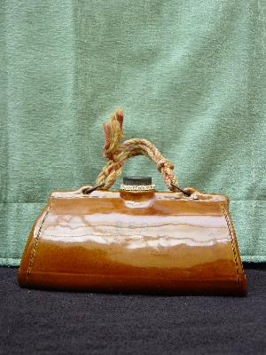

| Name |
The Gladstone Bag |
| Manufacturer |
Bourne, Denby, England |
| Writing |
B.E.D. |
| Markings |
- Registration
Number 740416
- Stitching
effect around edges of bag.
- Four
"feet"
|
| Notes |
A classic. Denby
brought out a range of childrens water bottles of
which the Gladstone Bag appears to be the most
popular judging by the number on the market. The
other shapes include a rabbit, an owl, a cat and
another bag with some coloured parts. These are
all highly, highly collectable not least by Denby
collectors. If you see one for under £150 in
good condition, then it's a bargain. The bag in
the picture would have originally had a leather
strap which is quite rare to find now. |
|
 |